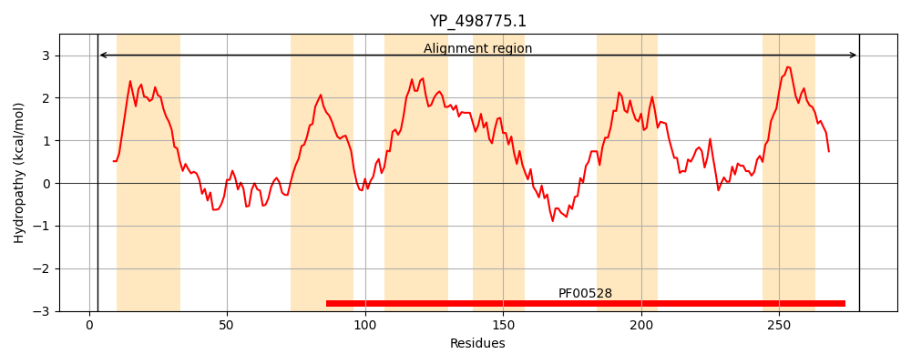
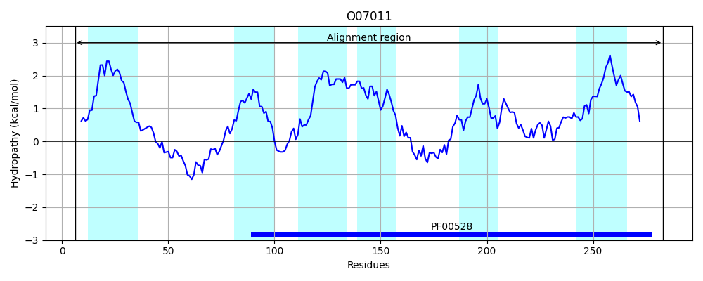

Hit Accession: O07011
Hit TCID: 3.A.1.1.2
Hit Description: gnl|BL_ORD_ID|6784 gnl|TC-DB|O07011|3.A.1.1.2 Putative arabinogalactan oligomer transport system permease protein ganQ OS=Bacillus subtilis GN=ganQ PE=3 SV=1
Mach Len: 278
e:0.000000
Query TMS Count : 6
Hit TMS Count: 6
TMS-Overlap Score: 6.050000
Predicted Substrates:CHEBI:24151;galactooligosaccharide
BLAST Alignment:
Score: 736 , Bit scores: 288 bits, E-value: 8.7e-98, Alignment length: 278, Percentage identity: 50
Query: 3 KKKNILKAIGIYSFIAMMFVIILYPLLWTFGISLNPGTNLYGAKMIPDNATFKNYAFLLFD-DSSQYLTWYKNTLIVASANALFSVIFVTLTAYAFSRYRFVGRKYGLITFLILQMFPVLMAMVAIYILLNTIGLLDSLFGLTLVYIGGSIPMNAFLVKGYFDTIPKELDESAKIDGAGHMRIFLQIMLPLAKPILAVVALFNFMGPFMDFILPKILLRSPEKFTLAVGLFNFINDKYANNFTVFAAGAIMIAVPIAIVFLFLQRYLVSGLTTGATKG 279
K + ++ + Y +A M VII+YPLLWT G S NPG +L +IP + TF +Y L +S QY+ WY N++ ++ S++ VT TAYAFSR+RF GRKY L FL+LQM P A++A+++L +G+++S + L L+YIGG IPMN +L+KGY D+IP +LDESAKIDGA RIF QI+LPL+KP+ AVVA+ F GP DF+L +LR+PE +TL VGLFN +ND ++T FAAGA++I++P+A++F+ LQ+ VSGLT G TKG
Sbjct: 6 KVRRYIRLLFSYLLLAFMAVIIVYPLLWTAGASFNPGNSLISTSIIPKHPTFDHYKELFAGKESLQYVQWYVNSMKISLFTMAGSLLCVTFTAYAFSRFRFKGRKYALTLFLLLQMIPQFSALIALFVLAQILGMINSHWLLILLYIGGLIPMNTYLMKGYMDSIPMDLDESAKIDGASSTRIFFQIILPLSKPMAAVVAMNGFTGPLGDFVLSSTILRTPESYTLPVGLFNLVNDVMGASYTTFAAGALLISIPVAVIFIMLQKNFVSGLTAGGTKG 283 | Protein Hydropathy Plots: |
|---|
|  |  |
Pairwise Alignment-Hydropathy Plot:
|
|---|
 |